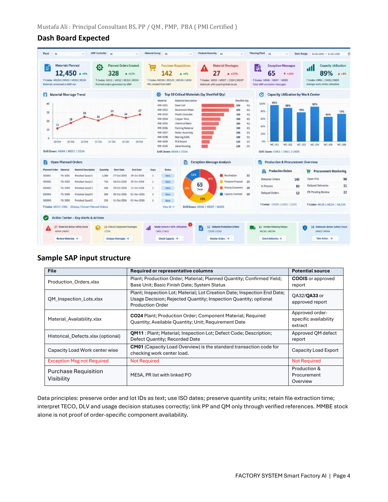

<!doctype html><html lang="en"><meta charset="utf-8"><meta name="viewport" content="width=device-width,initial-scale=1"><title>Smart Factory — design reference</title><style>body{margin:0;background:#f3f5f7;color:#203343;font:15px/1.6 Arial,sans-serif}main{max-width:1100px;margin:auto;padding:32px}header{display:flex;justify-content:space-between;gap:24px;align-items:center}h1{font-size:28px;margin:0}p{max-width:80ch}a{color:#096591}figure{margin:28px 0;background:white;padding:16px;border:1px solid #d5dfe5;border-radius:8px}img{display:block;width:100%;height:auto}aside{background:#fff;padding:20px;border:1px solid #d5dfe5;border-radius:8px}code{background:#e9eef2;padding:2px 5px}</style><main><header><div><h1>The agreed manufacturing cockpit</h1><p>Original proposal reference — not a screenshot of the implemented application.</p></div><a href="/">Return to application</a></header><aside><strong>How to read this reference</strong><p>The composition below comes directly from the supplied proposal. Its numbers are illustrative. Our implementation must use uploaded facts, mark unsupported metrics unavailable, and add the side agent and full-screen Agent view requested later.</p><a href="original-proposal.pdf">Open the complete original proposal (PDF)</a> · <a href="agreed-product-and-gaps.md">Read the stack, chart and implementation review</a></aside><figure><figcaption>Proposal printed page 4: expected dashboard and source-data contract.</figcaption></figure></main></html>
